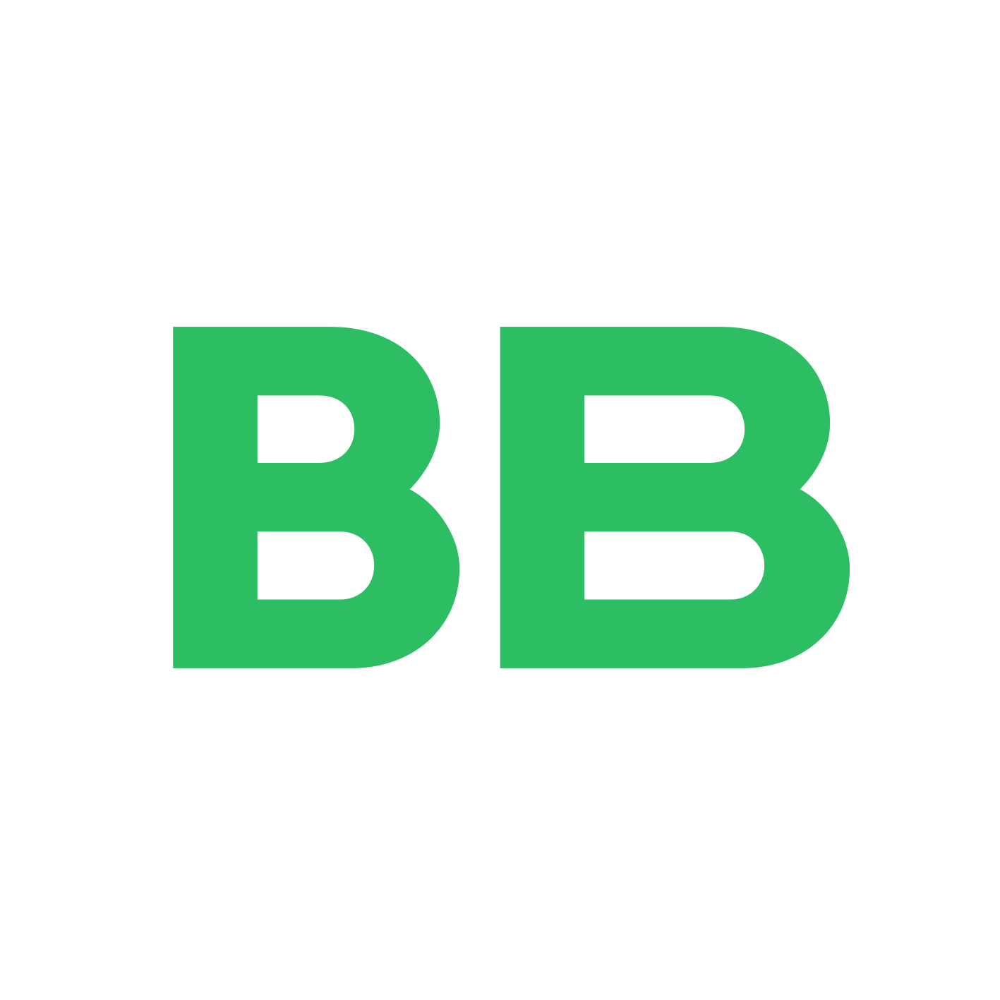

Стоимость замены сотрудника достигает 50% годового оклада и более за счёт повторного подбора, обучения, потери производительности, знаний и времени для выхода на полную работоспособность
joinforma.com
Всеволод Барвинок
·
22 года
·
Санкт-Петербург
Специалист по управлению персоналом
HR | HRG | HRO | HR Product
Резюме напрямую без hh.ru и платного открытия контактов
В АКТИВНОМ ПОИСКЕ
РАБОТЫ
и проектов
Поиск компании, где можно развивать навыки HR-специалиста, интересны большинство функций управления персоналом, кроме подбора (не более 20%) и КДП. Уход от кадровых агентств и ИП, желателен in-house — почему так — вы поймёте ниже
02 / Цифры
50%+
+23%
57%
Почему HR-сфера важна компаниям
Компании с высоким уровнем вовлечённости получают на 23% больше прибыли и уменьшение текучести до 41%
gallup.comАктивная культура развития персонала предотвращает до 57% нежелательных уходов талантливых/высокоэффективных сотрудников
LinkedIn WLR 2024Тренды в HR в России опаздывают: пока мировые компании уже переходят от реактивного управления к системной работе с благополучием сотрудников (well-being) и удержанием не критическим, а осознанным — с глубоким изучением Employee Experience (EX). В фокусе оказываются не только метрики текучести, но и качество вовлечённости, ментальное здоровье, гибкость и прозрачность процессов. Опережающее внедрение HRTech и аналитики превращает HR из поддерживающей функции в драйвер бизнес-результатов
*многие преимущества ещё зависят от отрасли, местоположения и размера компании, после чего можно сопоставить боль и решения в цифрах по HR- и бизнес-показателям
03 / Фокус в HR
Интересующие HR-функции
Почему не углубляюсь в подбор персонала и кадровое делопроизводство
Перенасыщен рынок данными специалистами и более полезен на других HR-функциях. Но это не отменяет знание в: ТК РФ и необходимых ЛНА, полного цикла подбора персонала (от составления профиля должности до коммуникации с ЛПР и выхода в должность) — так как они важны в HR-аналитике и при внедрении инструментов и инноваций
P.S. Почему так много специализаций — для увеличения точек соприкосновения на боли компании. Но пока не рассматриваю подбор (не более 20%) и КДП: рынок ими перенасыщен, а моя ценность — в остальных HR-функциях, аналитике и HRTech
Пока все бегут из найма, я очень в него стремлюсь (офисный, гибридный, удалённый — все форматы шикарны). Мне НЕ будет у вас скучно — интереса можно достигнуть постепенно, закрывая в первую очередь боли отдела персонала, и я это понимаю, особенно в период кризисов
04 / Опыт
Опыт работы
Nexign (Neon HRM)
HR Product Manager
Учебный проект от крупной IT × ИТМО: исследования в области внедрения ИИ в HR-функции для разработчиков HRM-системы. Работа над HRTech-проектом ведётся в вечернее учебное время.
Цель: определить оптимальные пути интеграции ИИ в продукт HRM-систему. Связывать IT-инфраструктуру, HR-потребности и бизнес-показатели.
Обязанности:
- Анализ рынка HRM/HCM-систем и AI-модулей в HR и выделение трендов по функциям и рынкам
- Систематизация исследований по AI в HR для доказательных рассуждений и дальнейших решений
- Формирование конкурентной карты и классификация решений по функциям в виде матрицы BCG
- Проведение стратегического анализа (SWOT, PESTEL)
- Разработка сценариев применения AI в целевых HR-функциях
- Определение возможной эффективности с измерением показателей, исходя из исследований
- Проведение еженедельных встреч с заказчиком (специалисты из HR, IT и др.) для публикации результатов спринтов, изменение конечных целей и формирование новых точечных задач в течение следующего периода (видеозвонок, чат)
Достижения:
- Сформировал таблицу из более 70+ конкурентов, которые внедрили AI в HR со следующей характеристикой: Страна/регион, Тип решения (HRM, HCM, LMS, ATS, AI-агент), Позиционирование, ЦА B2B, ЦА сотрудников (Руководство, HR, сферы сотрудников), Ценность клиентам
- Сформировал базу из 100+ HR-функций по модели: Боль → AI-решение → Потенциальный эффект и преимущества для продуктовой разработки HRTech-решений
- Выделил ключевые функции в зонах для внедрения AI (адаптация, обучение, удержание, развитие, управление талантами, аналитика), покрывающие запрос заказчика про well-being и направлению социального менеджмента
- Разработал набор сценариев внедрения AI в HR в выделенных топах, ориентированных на повышение эффективности выделенных HR-показателей (собран набор из 40+ штук) и показывающий путь клиента (CJM)
- Подготовил аналитическую основу, формулы и совмещение факторов для разработки HRTech-продуктов и представления расчётов эффективности решений

ВкусВилл
Специалист по адаптации персонала
Зона ответственности: адаптация, удержание, аналитика employee experience, внутренние коммуникации, HRTech-инициативы в 4 группе (Санкт-Петербург и регионы, ~5000 сотрудников)
Обязанности:
- Анализ адаптации сотрудников 1-й линии (розница: вайтсторы, дарксторы) на этапах 5 дней / 1 месяц / 3 месяца; проведение 180°-оценки (сотрудник, руководитель + наставник)
- Сбор и анализ обратной связи: регулярные опросы (5 дней / 1 месяц / 3 месяца), интервью (при обнаружении боли), ежемесячное exit-интервью
- Выявление ключевых проблем (боли сотрудников) и формирование решений для повышения удержания, вовлечённости и удовлетворённости работой, снижая общую текучесть
- Разработка и реализация инициатив по развитию сотрудников и внутренним коммуникациям в виде форматов публикаций во внутреннем TG-канале
- Вовлечённость в HR-брендинге и организации внутренних мероприятий
- Участие ключевым специалистом в проекте по физическому и ментальному здоровью сотрудников
- Участие в еженедельном собрании розницы группы в роли спикера по блоку «Адаптация персонала» (статистика увольнений по должностям 1-30 дней, 31-90, причины увольнений, анализ опросов и комментариев, ежемесячно — по точкам и руководителям)
- Взаимодействие с руководителями розницы, отделом персонала, IT, юристами, информационной безопасностью и маркетологами для достижения HR-целей
- Использование инструментов: 1С (ЗУП), LLM (ChatGPT, Gemini, Perplexity и др.), Cursor и другие AI-агенты (Roo Code, Kilo Code), Python (Virtual Studio Code, Docker, GitHub)
Достижения:
- Обеспечил регулярный анализ ~60 сотрудников еженедельно в периметре ССЧ ~5000 сотрудников, более 100 exit-интервью ежемесячно, что позволило системно выявлять причины текучести и снижения вовлечённости на разных этапах
- Выявил и структурировал ключевые драйверы увольнений (топ причин, покрывающих ~80% случаев, индивидуализация остальных 20%) по различию стажа (>1 месяца/1-3/4-6/7-12/1-3 года/более 3 лет), что позволило сфокусировать различия в HR-инициативах
- Отчистил данные от нерелевантности для улучшения результатов HR-аналитики благодаря углубленной обратной связи и добавлению новых показателей
- Сократил время реакции на проблемы сотрудников примерно до 2 дней из недели за счёт систематизации обратной связи и выстраивания процессов прозрачности HR-аналитики
- Создал новые форматы публикаций в существующем канале по карьерному развитию сотрудников 1-й линии, для офиса — план мероприятий на каждый месяц с возможностью выбора
- Разработал и создал структуру Telegram-бота для сбора обратной связи и повышения удовлетворённостью ментального и физического состояния сотрудника, который при запуске, по расчётам аналитика, дал бы следующие результаты:
- увеличение глубины диагностики проблем сотрудников с помощью анализа эмоций (утро/вечер), тем самым улучшая ментальное здоровье и фиксируя время боли
- ускорение передачи обратной связи руководителям и HR-специалисту с 2-х дней до минут за счёт построения сценариев без третьих и более лиц
- улучшение физического состояния благодаря внедрению новых форматов с учётом персонализации потребностей
- Способствовал положительной динамике по ключевым HR-метрикам:
- снижение текучести на 3-4 п.п. в сравнении с прошлым годом
- рост удовлетворённости сотрудников и оценки руководителей (eNPS / вовлечённость), наставников, условий и работодателя в целом до 20% по каждому показателю в сравнении с прошлым годом и в динамике ежемесячно
- Участвовал в развитии HRTech-подходов (AI-инструменты, автоматизация), что снизило время на ручные операции и повысило качество аналитики
Причина ухода: оптимизация бюджетов розницы, заработная плата, ограничение инноваций в отделе — заполненность других подразделений для возможности перехода.
BeeHunt
HR-специалист / Junior HRG
Изначально выступил в роли бизнес-ассистента с рядом HR-задач. Является кадровым агентством с вакансиями по узконаправленным специалистам от IT, FinTech, DeepTech и промышленных компаний.
Обязанности:
- Ведение полного цикла HR-задач в агентстве: адаптация, обучение, наставничество, подбор, коммуникации с заказчиками и кандидатами
- Поиск актуальных материалов по изменениям в ТК РФ и дополнительных инструментов для рекрутеров и руководителя
- Работа в 1С:Предприятие 8.3 (Бухгалтерия, Зарплата и управление персоналом)
- Полный цикл подбора персонала для внутренних и внешних заказчиков: холодный поиск кандидатов, проведение интервью, сбор рекомендаций и сопровождение кандидатов до стадии оффера (hh.ru, LinkedIn)
- Организация документооборота: использование курьерских служб и ЭДО (Контур.Диадок), создание ЛНА, регламентов, коммерческих предложений и договоров
- Проведение исследований рынка услуг, связанных с управлением персоналом (подбор, адаптация, обучение), для их внедрения в компанию и развитие для внешних заказчиков
- Участие в разборе конфликтных ситуаций и exit-интервью
- Работа с вовлечённостью персонала: поиск материальной и нематериальной мотивации, анализ потребностей в инструментах для дальнейшего развития в компании
- Управление по методологии Agile / Scrum
Достижения:
- Актуализировал всю базу знаний по обучению для IT-рекрутеров и других специфик, ускорил процессы работы с часа до 10 минут (в среднем) за счёт упрощения подготовки документов для заказчиков
- Создал ЛНА и шаблоны документов: коммерческие предложения, договоры с подрядчиками (ООО / ИП / самозанятые), бланки и предложения о работе (офферы), что сократило среднее время подготовки документов с 40 минут до 7 минут
- Подготовил обучающие материалы для программ адаптации и дообучения персонала по вопросам ТК РФ и ПО; сократил время выхода на планируемую производительность с 4-х до 3-х недель
- Уменьшил текучесть рекрутеров на 20% и оптимизировал ресурсы компании с помощью модификации системы мотивации и анализа причин ухода с решением ключевых проблемных моментов
- Создал стратегию развития HR-бренда компании в виде roadmap (дорожной карты) проекта
- Внедрил первичное ИИ в процессы агентства: база знаний, материалы для адаптации и обучения сотрудников, сбор обратной связи и её анализ. Сократил количество обращений по вопросам дополнительной информации по инструментам подбора и улучшил качество фидбека и структуризацию результатов коммуникации
- Изучил на практике систему управления персоналом: от подбора, адаптации и обучения до выходного интервью (exit-интервью), что вошло в учебные проекты, курсовые и выпускную квалификационную работу
Причина ухода: компания сменила вектор развития: по условиям рынка не решила расширяться, только сосредоточиться на бизнес-процессах, из-за чего уменьшились HR-задачи и отсутствует развитие в системе управления персоналом.
05 / Преимущества
Молодость надо использовать
Unfair advantage (уникальные преимущества)
-
→
Основа: бакалавриат СПбПУ «Управление персоналом организации» → Улучшение: магистратура ИТМО «Инноватика» (Управление высокотехнологичным бизнесом | HBM)
-
→
Связь с различными сферами: HR, IT, дизайн, маркетинг, брендинг, финансы — всё, чтобы представить проект специалистам, руководителям, ЛПР крупных компаний
-
→
Есть опыт в научной деятельности, и хочу её продолжить для предоставления инновационных подходов для компании win-win
-
→
Проектно-ориентированный и исследовательский подход параллельно и в университете, и на работе, в одном быстром ритме для успешного и доказательного результата
-
→
Обучение ИИ-платформам научно и на практике только в виде инструмента специалиста, а не полноценной замены — есть многое, что хочется дополнить и кастомизировать самостоятельно, но улучшается сбор всех данных, точек зрения и их формат
-
→
Опыт только 2+ года, но он уже был связан как с зоной ответственности на 5000+ человек, так и с разработкой в HRTech в виде HRM-системы, и продолжаю улучшать навыки научно и на практике
06 / Наука
2027 · Магистр
2025 · Бакалавр
2025
2024
ИТМО
Образование и научная деятельность
Национальный исследовательский университет ИТМО
27.04.05 Управление высокотехнологичным бизнесом
Санкт-Петербург
Санкт-Петербургский политехнический университет Петра Великого
38.03.03 Управление персоналом организации
Санкт-Петербург
Лучший выпускник бакалавриата по направлению «Управление персоналом» в СПбПУ (2025)
Победитель «Молодежная Неделя Науки ИПМЭиТ 2024» в секции «Управление персоналом»
Доклад и статья на XIV Конгрессе молодых ученых Университета ИТМО (секция «Цифровая трансформация бизнеса в условиях глобальных изменений»)
07 / Цели
Лично
В компании
В HR в целом
Цели и куда стремлюсь
Развитие кросс-функциональных компетенций в HRTech на стыке HR, IT и Project/Product'а, повышение научности (написание статей, проведение исследований)
В первую очередь определение болей, их структуризация, шагов и решений; в долгосрочном инициатива в HR и HRTech для улучшения HR- и бизнес-показателей, стремление к номинациям в HR-сфере вместе с командой для брендинга компании
Погружение в HRTech научно и практически при возможности, изучение инновационных подходов и науки в сферу, попытки и стремление улучшить жизнь сотрудников, уменьшить стресс, показывая компаниям преимущества и важность HR
Я не ищу фриланс, хочу именно основную работу
НО готов к проектам:
- индивидуально (как раз учу компетенции project- & product-специалиста, конкурируя на защитах проектов с действующими профессионалами крупных компаний)
- с HR-командой (вашей или молодых специалистов под задачу)
- с командой из разных сфер (дизайн, маркетинг, финансы, IT и др.) под ваш запрос
Я знаю, что в HR можно ещё много чего сделать, чтобы наша сфера была по максимуму полезна как для бизнеса, так и для сотрудников, но на это нужны время, исследования, мысли и ответственные за это специалисты — и я хочу и готов быть одним из них в вашей компании
Ещё 2 курс очной магистратуры, но занятия проходят в вечернее время (c 19), что и позволяет полную занятость
«В мире и так много стресса, поэтому попробуем его снижать хотя бы в рабочих моментах — и в этом найдём улучшения не только для сотрудников, но и для бизнеса»